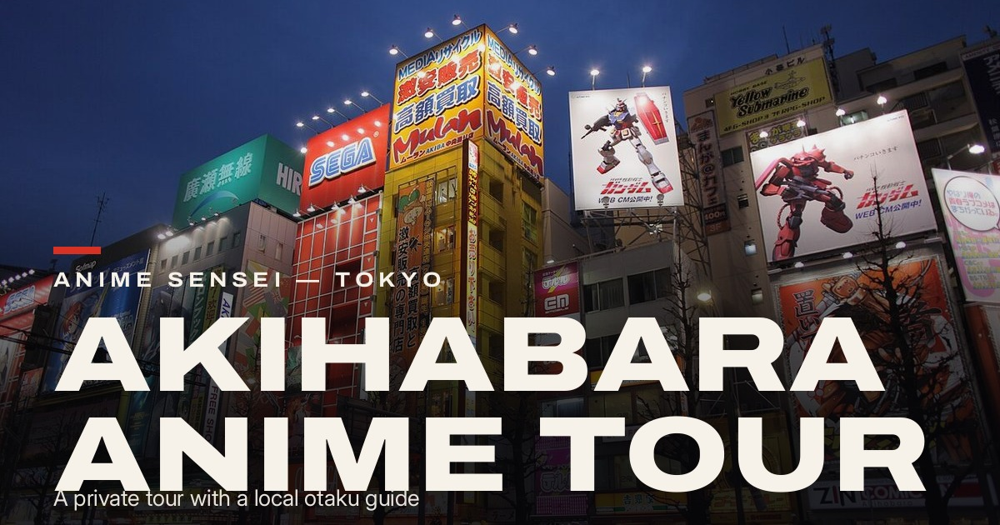
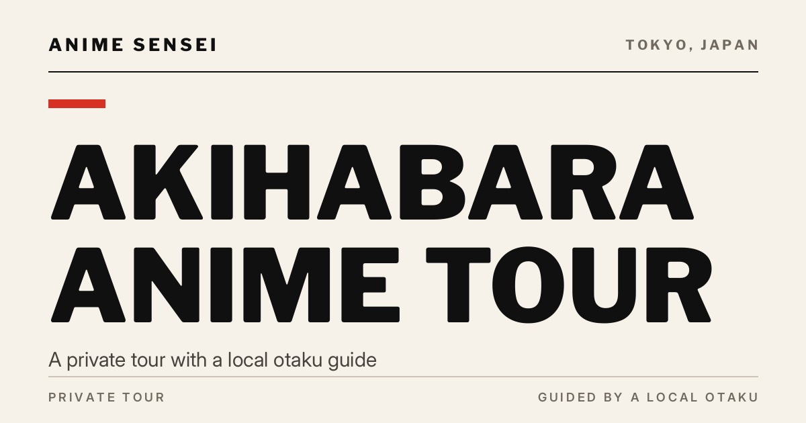
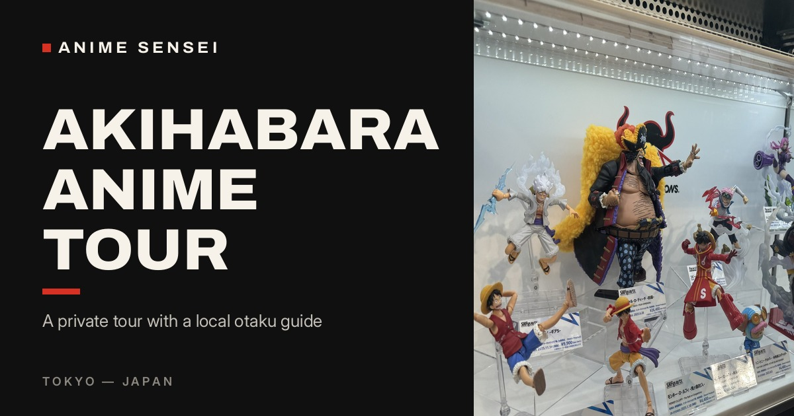
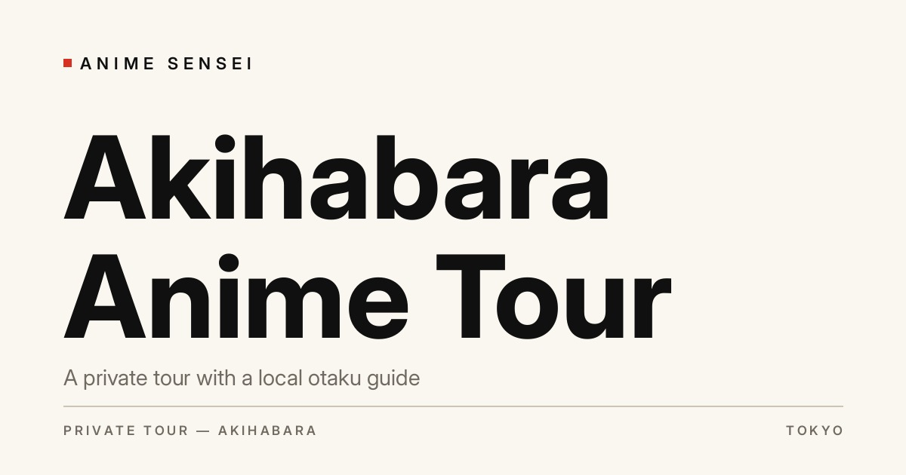
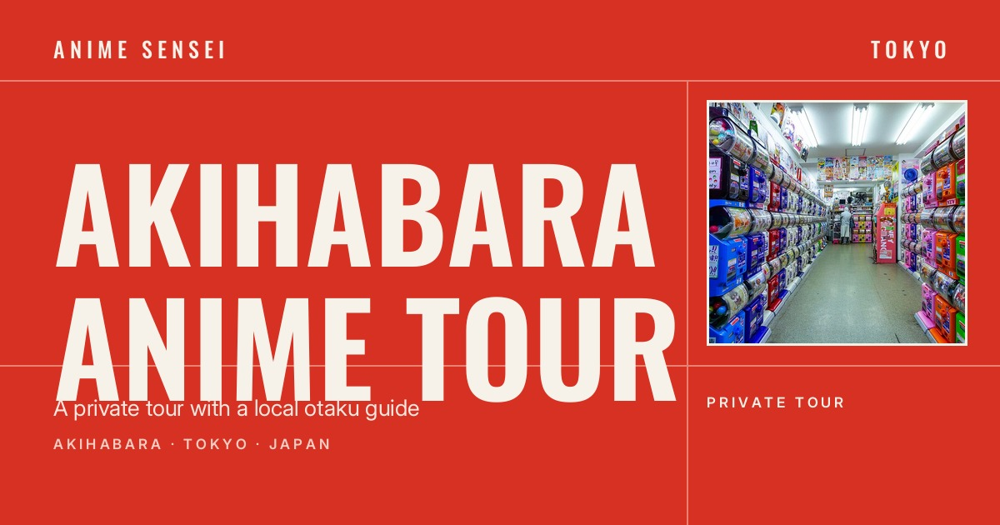

1Full-bleed Night夜景フルブリード＋下部グラデーション、Archivo Expanded ExtraBold

2Cream Editorialクリーム地に Libre Franklin ExtraBold、罫線と赤ルールだけの編集デザイン

3Split Black黒パネル＋右にフィギュア写真、Archivo ExtraBold を3行積み

4MinimalInter の大文字小文字タイトル、余白主体のミニマル

5Red Grid赤地にクリームの Oswald、罫線グリッド＋ガシャポン写真パネル
